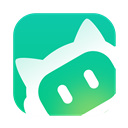

ONETONE · UI 预览 v2（未接线）
独立对话窗 + 对话历史
配色只保留主题色；人称「我」；Agent 用品牌图标区分。任务整理走右键菜单（新建 / 置顶 / 重命名 / 归档 / 删除 / 批量）。
独立窗：「我」右对齐浅主题气泡；助手左对齐白卡片 + WorkBuddy 图标。任务条只有名称与 ⋯（右键/菜单），无彩色「新任务」按钮。
WorkBuddy 本机对话
voice-pilot · glm-4.6 · 本机讨论
我我
把首页和 WorkBuddy 对话 UI 对齐主流 agent 客户端，用户和 agent 文本不要再混在一起。

WorkBuddy可以。建议先改独立对话窗消息样式：我右对齐气泡、助手左对齐文档流，角色与正文分开渲染。历史再做成「任务 → 时间线」。
我我
颜色不要过于丰富。历史任务用右键菜单做新建、置顶、重命名、删除、批量、归档。
WorkBuddy
收到。主题色保留，Agent 靠图标识别；任务操作收进右键菜单。
正在回复…
对话历史：左侧任务列表支持单击打开、Ctrl 多选批量；在任务上右键出菜单。时间线混排本机对话与投递，用主题色细竖条点缀，不用每人一套彩色标签。
修复首页对话分层
voice-pilot · 本机 + 桌面投递 · 更新于 23:18
今天
22:51
我
本机对话
把首页和 WorkBuddy 对话 UI 对齐主流 agent 客户端…
22:52
WorkBuddy
本机回复 · glm-4.6
建议先改独立对话窗消息样式，再做任务级历史。
23:05
按预览实现 WorkBuddy 独立窗气泡分层，并升级对话历史为任务时间线。
snapshot · 1.8k 字 · 已粘贴
23:11
已送达桌面 · 等待执行（≠ 执行完成）
verified paste · receipt ok
23:18
我
本机对话
颜色不要过于丰富；历史任务用右键菜单。
浅主题气泡 = 我
白卡片 + 图标 = Agent
左侧主题细条 = 投递 / 回执